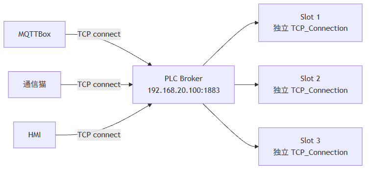
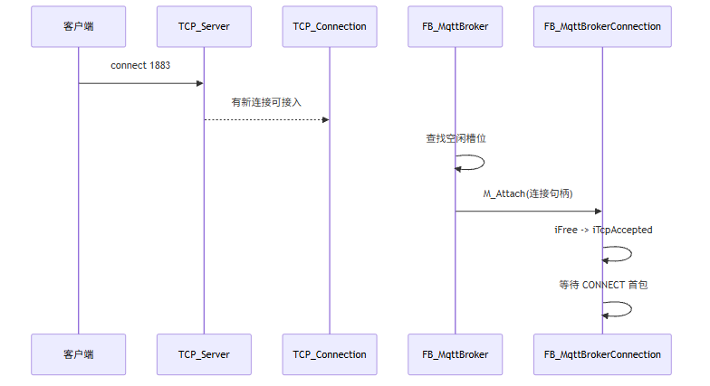
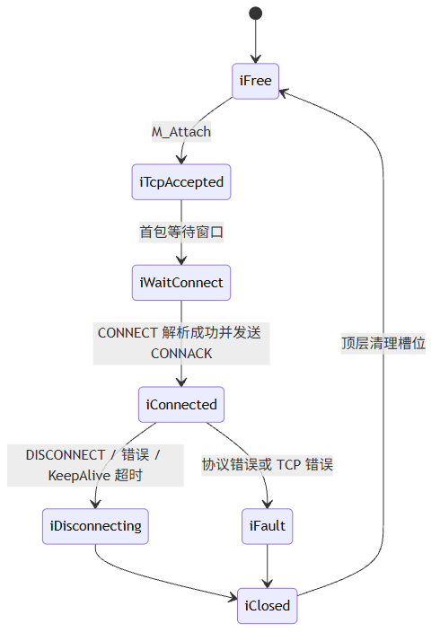
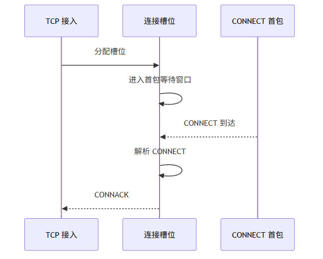

这一篇只讲 Broker 的第一道硬门槛：多个客户端为什么都应该连接同一个 1883 端口，以及 PLC 里应该怎样用监听句柄、接入句柄、客户端槽位把这件事做稳定。
适合谁收藏
- 客户端连接 PLC Broker 时反复失败的人
- 不确定多个客户端能否共用
1883端口的人 - 想把 PLC TCP Server 写成稳定服务端的人
- 正在看
xTcpAcceptActive、uiAcceptFreeSlot、uiActiveSlotCount闪烁的人
写 Broker 最容易一上来就盯着 PUBLISH。
但实际测试时，第一关通常不是消息转发，而是：
两个客户端都连 192.168.20.100:1883，为什么一个都连不上，或者槽位刚置位就释放？
先给结论：
MQTT Broker 不是每个客户端开一个端口。 Broker 是一个监听端口，后面挂多个独立连接槽位。每个槽位必须有自己的 TCP 连接状态、MQTT 会话状态、收发缓冲和诊断快照。
这里讲的是 PLC 侧轻量 Broker 的连接模型，目标是让 5~8 个工业现场客户端稳定接入，不是把 PLC 写成互联网高并发服务器。
一、多个客户端连同一个端口是正常的
很多 PLC 工程师第一次写服务器时会本能怀疑：
两个客户端都连 1883，会不会端口冲突？
不会。
冲突只发生在“多个服务端同时绑定同一个 IP:Port”。客户端连接同一个服务端端口是 TCP 服务器最基本的模型。

监听端口只有一个。 连接槽位可以有多个。
二、监听句柄和连接句柄不是一个东西
在 PLC 里写 Broker，必须把这两件事分开：
| 对象 | 作用 | 生命周期 |
|---|---|---|
NBS.TCP_Server | 打开监听端口 | Broker 运行期间长期存在 |
NBS.TCP_Connection | 接收一个具体客户端连接 | 每个客户端独立存在 |
FB_MqttBrokerConnection | 管理 MQTT 会话 | 跟客户端槽位绑定 |
一个典型的接入链路是：

这里最重要的一点：
不能把所有客户端都塞进同一个 TCP_Connection 实例里复用。
那样会把 TCP 句柄、读写状态、错误状态、MQTT 会话全部搅在一起。
三、客户端槽位应该保存什么
FB_MqttBrokerConnection 不是“一个读写工具”，它是一个客户端会话容器。
| 字段类别 | 典型内容 |
|---|---|
| TCP 层 | 连接句柄、Active 状态、读写错误、最近读写时间 |
| MQTT 层 | ClientID、协议版本、KeepAlive、Clean Session |
| 收发缓冲 | aRxBuf、aTxBuf、当前帧长度、批量写出长度 |
| 队列 | 协议响应队列、普通投递队列、QoS 事务表 |
| 诊断 | xUsed、eState、eLastError、udiLastBytesRead |
状态机可以简化成这样：

四、为什么 xTcpAcceptActive 会闪
现场真实现象是：
xTcpAcceptActive = TRUE一下。aSnapshots[1].xUsed置位一下。- 马上又复位。
uiAcceptFreeSlot从 1 到 2 又回 1。- 客户端最后连接失败。
这个现象不能简单判断为“端口没开”。
更像是：
| 现象 | 可能原因 | 优先看什么 |
|---|---|---|
xTcpAcceptActive 闪一下 | TCP 层已经看到新连接 | hLastAcceptHandle 是否变化 |
槽位 xUsed 闪一下 | 槽位分配成功但后续释放 | stLastCleanupSnapshot |
udiLastBytesRead = 0 | CONNECT 首包还没到 | 首包等待窗口 |
udiLastBytesRead > 0 但断开 | MQTT 解析失败 | eLastParseError、byLastConnectLevel |
xError = FALSE 但错误码不为 0 | 错误生命周期没清干净 | xError 与 eLastError 联动 |
五、两个关键容忍窗口
真实 PLC 网络不是理想状态机。
客户端连接后，NBS 层可能先给出句柄和短暂 Active，但 MQTT CONNECT 首包不一定已经到达。如果这时严格判断“没读到包就断”，槽位就会一闪而过。
所以当前 Broker 固化了两个关键窗口：
| 常量 | 作用 |
|---|---|
cnConnectFirstReadDelayMs := 20 | 新连接接入后，允许 CONNECT 首包有一个短暂到达窗口 |
cnConnectionInactiveGraceMs := 3000 | TCP Active 短暂掉 FALSE 时，不立即误杀连接 |
这两个参数不是为了“拖慢”，而是为了不误杀。

六、错误码必须和错误标志同步
曾经出现过一个很误导人的现象：
xBrokerError = FALSE
eBrokerError = uiClientSlotsFull这显然不对。
如果 xError = FALSE，当前错误码就应该回到 uiNoError。否则在线监控会让人误以为槽位满了。
正确原则：
| 状态 | xError | eLastError |
|---|---|---|
| 当前周期无错误 | FALSE | uiNoError |
| 当前周期槽位满 | TRUE | uiClientSlotsFull |
| 错误已恢复 | FALSE | uiNoError |
| 历史需要保留 | 走 aDiagHistory | 不污染当前错误 |
这就是为什么 Broker 同时保留“当前错误”和“诊断历史”。
七、ST 代码入口
这一篇重点看这些入口：
| 代码入口 | 作用 |
|---|---|
FB_MqttBroker.M_AcceptNewConnection | 从监听层接入新 TCP 客户端，并分配空闲槽位 |
FB_MqttBrokerConnection.M_Attach | 把 TCP 句柄挂到连接槽位 |
FB_MqttBrokerConnection | 单客户端连接状态机 |
ST_MqttBrokerConnectionSnapshot | 在线诊断快照 |
典型接入逻辑可以压缩成这几步：
// 1. 顶层只负责发现新连接和寻找空闲槽位。
uiFreeSlot := M_FindFreeConnectionSlot();
// 2. 找到槽位后，把 TCP 连接句柄交给对应连接 FB。
aConnections[uiFreeSlot].M_Attach(
hConnection := hLastAcceptHandle,
udiNowMs := udiNowMs);
// 3. 后续读写和 MQTT 会话状态都由该槽位独立维护。
aConnections[uiFreeSlot]();注意这里的设计边界：
顶层 Broker 不应该直接替连接槽位读写 MQTT 报文。 顶层负责调度，槽位负责会话。
八、现场排障表
| 现场现象 | 第一优先级检查 | 第二优先级检查 | 常见修复方向 |
|---|---|---|---|
| 客户端连不上 | xRunning、hListenHandle | 绑定 IP、端口、防火墙 | 先用 0.0.0.0 验证监听 |
xTcpAcceptActive 闪 | uiAcceptFreeSlot、hLastAcceptHandle | 槽位快照 | 看是否首包未到就释放 |
| 槽位一闪即没 | stLastCleanupSnapshot | udiLastBytesRead | 增加首包等待和 Active 容忍 |
| 两客户端只能连一个 | cnMaxClientSlots | 每槽位 TCP 句柄是否独立 | 不要复用同一连接实例 |
报 uiClientSlotsFull | uiActiveSlotCount | 是否有僵尸槽位 | 清理关闭态和诊断历史 |
模型边界与验证路径
这一篇本质上讲的是连接生命周期模型。
表面上看，问题是 xTcpAcceptActive 闪了一下。往上看一层，它其实是监听句柄、接入句柄、连接槽位和 MQTT 会话状态没有被拆清楚。
| 结论 | 可信度 | 依据 | 验证路径 |
|---|---|---|---|
多客户端连接同一个 1883 是正常 TCP 服务端模型 | high | TCP 服务端基本模型和现场双客户端测试 | 两个客户端同时连接并观察 uiActiveSlotCount |
| 每个客户端必须有独立槽位 | high | 源码中的 FB_MqttBrokerConnection 槽位模型 | 分别观察 aSnapshots[1]、aSnapshots[2] |
| Active 瞬态变化需要容忍窗口 | medium | NBS 现场表现和用户测试现象 | 对比首包等待窗口开启前后的连接稳定性 |
这里不要把所有闪烁都直接定罪为网络问题。至少要先看三类对象：TCP 接入句柄、槽位快照、CONNECT 解析结果。缺任何一个，结论都只能算假设。
九、这一篇你最该记住的 6 句话
- 多个 MQTT 客户端连同一个
1883端口是 Broker 的正常模型。 - 一个监听端口后面必须分配多个独立连接槽位。
- 每个客户端槽位都要独立保存 TCP 句柄、MQTT 会话、缓冲、队列和诊断。
xTcpAcceptActive闪烁不等于端口没开，通常要看槽位生命周期。- 新连接首包等待窗口和 Active 容忍窗口，是解决 PLC 真实网络瞬态误断的关键。
- 当前错误码和错误标志必须同步，历史错误应该放诊断历史里。
下篇预告
下一篇讲 CONNECT 解析。
重点不是“CONNECT 有哪些字段”，而是：
MQTT 3.1、3.1.1、5.0 的协议名和协议级别如果写死，为什么会让 Broker 反复断开。
里面会讲一个很真实的坑：byLastConnectLevel = 100 不是协议等级 100，而是误读到了 MQIsdp 里的字符 d。
完整 ST 代码
下面这段来自 FB_MqttBroker.M_AcceptNewConnection.st。它是本文最核心的代码：每个客户端槽位绑定独立 NBS.TCP_Connection，每个扫描周期最多派发一个新连接，避免多个空槽同时抢同一个 TCP 句柄。
/// =======================================================================
/// 名称 : M_AcceptNewConnection
/// 功能 : 接受一个新的 TCP 客户端连接
/// 说明 : 每扫描周期最多分配一个新连接，避免大量接入瞬间拖长 PLC 扫描周期。
/// 编程人员 : ControlRookie
/// 时间 : 2026-05-08
/// 版本 : V1.0
/// =======================================================================
{attribute 'hide_all_locals'}
METHOD M_AcceptNewConnection : BOOL
VAR
uiIndex : UINT; // 连接槽位扫描索引[1..cnMaxClientSlots]
END_VAR
// === IMPLEMENTATION ===
uiFreeSlot := 0;
uiUsedSlotCount := 0;
xTcpAcceptActive := FALSE;
xTcpAcceptError := FALSE;
// 每个客户端槽位必须独立调用自己的 NBS.TCP_Connection。
// 之前如果多个槽位复用一个 TCP_Connection 实例，hConnection 会被后续接入覆盖，
// 连接槽位中的 TCP_Read 就可能读到已经失效或不属于自己的句柄，现场表现为客户端连接瞬间掉线。
FOR uiIndex := 1 TO GVL_MqttBroker.cnMaxClientSlots DO
IF aConnections[uiIndex].xActive THEN
// 已占用槽位继续保持对应 TCP_Connection 运行，用它的 xActive 作为该槽位连接是否仍有效的唯一依据。
uiUsedSlotCount := uiUsedSlotCount + 1;
aTcpAccept[uiIndex](xEnable := TRUE, hServer := hServer);
ELSE
IF uiFreeSlot = 0 THEN
// 本周期只开放第一个空闲槽位接收新连接，控制 PLC 单周期接入工作量。
uiFreeSlot := uiIndex;
aTcpAccept[uiIndex](xEnable := TRUE, hServer := hServer);
ELSE
// 其他空闲槽位禁用，避免同一扫描周期多个空槽同时竞争同一个新连接。
aTcpAccept[uiIndex](xEnable := FALSE, hServer := hServer);
END_IF
END_IF
END_FOR连接真正入槽时，再由连接对象执行 M_Attach，把槽位状态切到 iWaitConnect。这一步把“TCP 已连上”和“MQTT 会话已建立”严格分开。
/// =======================================================================
/// 名称 : M_Attach
/// 功能 : 把 TCP 连接句柄绑定到当前槽位
/// 说明 : 监听层接受新连接后调用，连接进入等待 MQTT CONNECT 状态。
/// 编程人员 : ControlRookie
/// 时间 : 2026-05-08
/// 版本 : V1.0
/// =======================================================================
{attribute 'hide_all_locals'}
METHOD M_Attach : BOOL
VAR_INPUT
hConnection : NBS.CAA.HANDLE; // 新接入客户端的 TCP 连接句柄
END_VAR
// === IMPLEMENTATION ===
M_Reset();
IF hConnection = 0 THEN
eLastError := E_MqttBrokerError.uiTcpAcceptFailed;
M_Attach := FALSE;
RETURN;
END_IF
stConnection.xUsed := TRUE;
stConnection.xMqttConnected := FALSE;
stConnection.xCleanSession := TRUE;
stConnection.xDisconnectRequested := FALSE;
stConnection.xGracefulDisconnect := FALSE;
stConnection.eState := E_MqttConnectionState.iWaitConnect;
stConnection.eLastError := E_MqttBrokerError.uiNoError;
stConnection.hConnection := hConnection;
stConnection.uiSlot := uiSlot;
stConnection.uiKeepAlive := GVL_MqttBroker.cnDefaultKeepAlive;
stConnection.udiLastActivityMs := udiNowMs;
stConnection.udiLastTcpActiveMs := udiNowMs;
stConnection.udiConnectedAtMs := 0;
stConnection.uiNextPacketId := 1;
eLastError := E_MqttBrokerError.uiNoError;
M_Attach := TRUE;
评论区预留
这里先保留评论和回复结构，不接入第三方服务。后续统一决定登录、匿名、审核、反垃圾和静态站兼容策略。